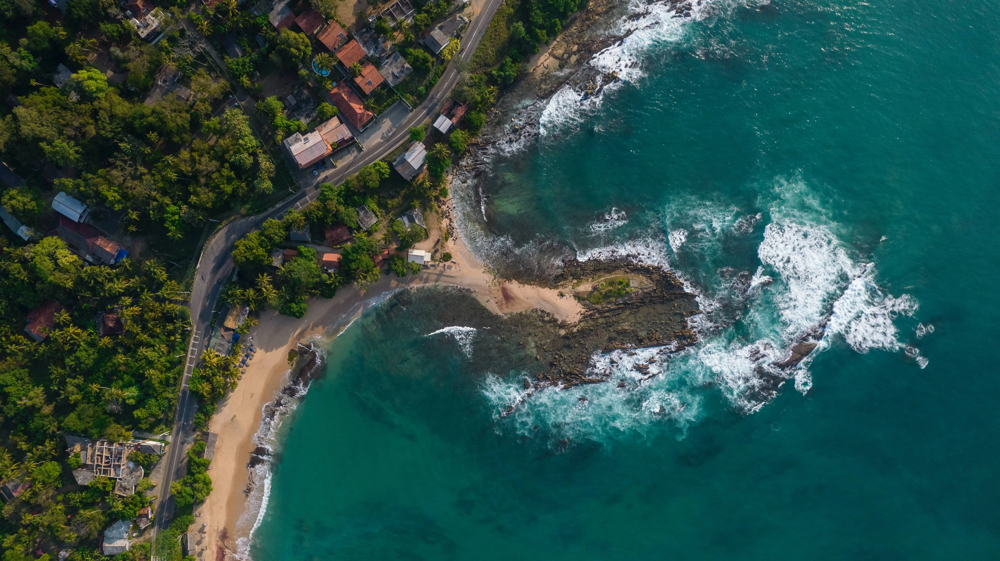

Explore
Hikkaduwa, located on the west coast of Sri Lanka, is renowned for its stunning long sandy beach that stretches as far as the eye can see. This coastal gem offers not only a picturesque setting but also a paradise for surfers seeking thrilling waves. The rhythmic swells and breaks make it an ideal destination for both beginners and experienced surfers alike.
But Hikkaduwa is not just for surf enthusiasts. Beneath its turquoise waters lies a vibrant underwater world teeming with life, making it a haven for snorkelers and divers. The coral reefs, adorned with a kaleidoscope of colorful fish and mesmerizing marine creatures, create a mesmerizing spectacle that beckons exploration.

Hikkaduwa Turtle Hatchery is a remarkable conservation project dedicated to protecting and preserving sea turtles. This hatchery plays a crucial role in safeguarding these endangered creatures and raising awareness about the importance of their conservation. Spanning across a scenic stretch of Hikkaduwa's shoreline, the hatchery serves as a sanctuary for sea turtles, providing a safe environment for nesting, hatching, and rehabilitation.
At Hikkaduwa Turtle Hatchery, visitors have the unique opportunity to witness the life cycle of sea turtles up close. The hatchery actively collects turtle eggs from vulnerable nesting sites, protecting them from potential threats and ensuring their successful incubation. Visitors can observe the careful process of egg incubation and the release of newborn hatchlings into the ocean, a truly awe-inspiring experience that showcases the hatchery's dedication to conservation efforts.

As you wander along the shoreline, you'll find an array of hotels, restaurants, and bars where you can relax and indulge in the coastal charm. The sandy shores offer the perfect spot for sunbathing, while the gentle ocean breeze whispers a soothing melody, creating a serene ambiance.
Hikkaduwa's allure lies in its ability to offer a perfect blend of natural beauty, adventure, cultural heritage, and conservation efforts. It has rightfully earned its reputation as one of Sri Lanka's top beach destinations, captivating the hearts of travelers from around the world with its coastal charm and abundant treasures.